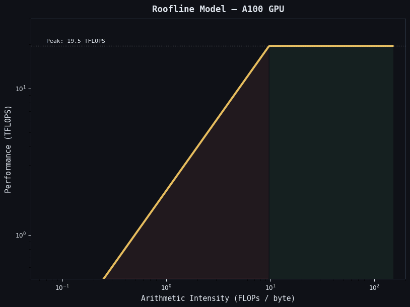

The Roofline model for an A100: diagonal = memory-bandwidth-bound (slope = 2 TB/s), flat ceiling = compute-bound (19.5 TFLOPS FP32). Your kernel's arithmetic intensity and throughput plotted on this chart tells you exactly what to optimize: more data reuse (move right) or more compute (move up).
In this post
The Roofline Model
The Roofline model answers: "Given my algorithm's arithmetic intensity, what is the maximum achievable performance on this GPU?"
Arithmetic Intensity (AI) = FLOPs performed / bytes transferred from global memory. It measures how much compute you get per byte of memory traffic.
| Kernel | FLOPs | Bytes | AI (FLOPs/byte) | Bound by |
|---|---|---|---|---|
| Vector Add (C=A+B) | N adds | 3N floats | 0.08 | Memory |
| SAXPY (y=ax+y) | 2N ops | 3N floats | 0.17 | Memory |
| Stencil 2D (5-pt) | 5N ops | ~4N floats | 0.31 | Memory |
| Conv 3x3 | 9N ops | ~2N floats | 2.25 | Memory/boundary |
| Tiled MatMul (T=32) | 2N^3 | 2N^2 floats | N/4 | Compute for large N |
A100 ridge point: 19.5 TFLOPS / 2 TB/s = 9.75 FLOPs/byte. Kernels below the ridge point are memory-bound. Above it, compute-bound. Vector add (AI=0.08) is 122× below the ridge — it will never be compute-bound.
Nsight Systems (nsys) — Timeline View
nsys gives you a system-wide timeline: CPU threads, GPU kernels, memory copies,
API calls, NVTX ranges. Use it first to understand where time goes.
# Basic profiling
nsys profile --stats=true ./myprogram
# With specific trace types
nsys profile --trace=cuda,nvtx,osrt --output=profile_report ./myprogram
# View in GUI:
nsys-ui profile_report.nsys-rep
# Or get text summary:
nsys stats profile_report.nsys-repFrom this output: vectorAdd takes 78% of kernel time — that's where to focus. Also: memcpy takes 1.5ms vs 1.2ms kernel time — you're transfer-bound. Consider streams to overlap them.
NVTX Ranges for Custom Profiling
#include <nvtx3/nvToolsExt.h>
void myFunction() {
nvtxRangePush("Data Preparation");
prepareData();
nvtxRangePop();
nvtxRangePush("GPU Computation");
myKernel<<<grid, block>>>(d_data, N);
cudaDeviceSynchronize();
nvtxRangePop();
}
// These show up as labelled regions in the nsys timelineNsight Compute (ncu) — Kernel Deep Dive
ncu profiles individual kernels with hardware performance counters.
It shows you occupancy, memory throughput, compute throughput, instruction mix,
and stall reasons.
# Full profiling of all kernels (slow: 5-20x slower due to counter collection)
ncu ./myprogram
# Profile specific kernel only
ncu --kernel-name "vectorAdd" ./myprogram
# Show summary metrics
ncu --set full ./myprogram
# Export for GUI
ncu -o ncu_report ./myprogram
ncu-ui ncu_report.ncu-rep
# Specific metrics
ncu --metrics sm__throughput.avg.pct_of_peak_sustained_elapsed, l1tex__t_bytes_pipe_lsu_mem_global_op_ld.sum, smsp__thread_inst_executed_pred_on_per_inst_executed.ratio ./myprogramThe Optimization Workflow
A systematic process that works for any kernel:
- Profile with nsys first. Find the hottest kernel (most time).
- Profile that kernel with ncu. Look at the Summary section.
- Identify the bottleneck:
- Memory throughput > 70%? Memory-bound. Optimize memory access.
- SM throughput > 70%? Compute-bound. Optimize arithmetic.
- Occupancy < 50%? Resource-bound. Check registers and shared memory.
- Apply one fix at a time. Re-profile after each change.
- Stop when you hit the Roofline ceiling.
Diagnosing Memory-Bound Kernels
# Key ncu metrics for memory-bound diagnosis:
ncu --metrics l1tex__t_sectors_pipe_lsu_mem_global_op_ld.sum, l1tex__t_requests_pipe_lsu_mem_global_op_ld.sum, l1tex__t_bytes_pipe_lsu_mem_local_op_ld.sum, l1tex__data_bank_conflicts_pipe_lsu_mem_shared_op_ld.sum ./myprogramDiagnosing Compute-Bound Kernels
# SM utilization and instruction mix:
ncu --metrics sm__throughput.avg.pct_of_peak_sustained_elapsed, smsp__inst_executed_pipe_fma.avg.pct_of_peak_sustained_active, smsp__inst_executed_pipe_tensor.avg.pct_of_peak_sustained_active, smsp__inst_executed_pipe_alu.avg.pct_of_peak_sustained_active ./myprogramOccupancy Profiling
# Check what limits occupancy:
ncu --metrics sm__warps_active.avg.pct_of_peak_sustained_active, launch__occupancy_limit_warps, launch__occupancy_limit_registers, launch__occupancy_limit_shared_mem, launch__occupancy_limit_blocks ./myprogramKey Metrics Cheat Sheet
| Metric | Good Value | If Bad: Look For |
|---|---|---|
| Memory throughput % | >80% for mem-bound | Uncoalesced access, cache misses |
| SM throughput % | >80% for compute-bound | Low occupancy, instruction mix |
| Achieved occupancy | >50% | Register spill, large shared mem, block too small |
| DRAM throughput | Near 2 TB/s for streaming | Uncoalesced, cache pollution |
| Sectors/request (global) | 1.0 | Coalescing issues |
| Bank conflicts | 0 | Add +1 padding to shared mem arrays |
| Local memory bytes | 0 | Register spilling, reduce --maxrregcount |
| Thread predication ratio | 1.0 | Warp divergence, reorder data |